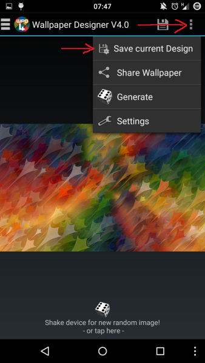
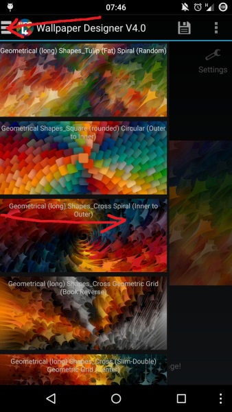
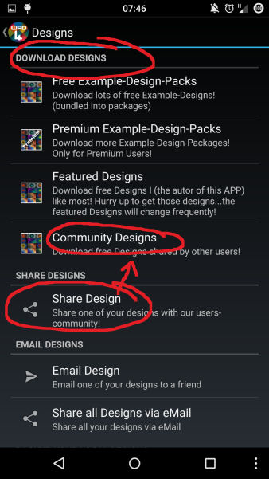

When you play with all the settings inside the Wallpaper Designer, you will finally come to a state, where you finetuned all those parameters, and your rendered wallpaper looks exactly how you want it to be…. Time to travel on and try some other settings...wait….what a pitty, that you loose all your finetuned settings then!!! Oh wait again … no, you can store those settings into a „Design“ and recall them later, whenever you want!!
That is easy...on the main-screen of the wallpaper Designer...tick the Menu-Button...(the 3 dots in the top-right corner) Select „Save current design“...thats all!

That is easy too… on the main-screen of the Wallpaper Designer...swipe in from the left...or press the 3 white bars in the topleft corner of the App...a drawer with all your beatifull designs will open...just tick one of them….and the App will load it up...super easy, right?

Well you can delete a single Design, or all of your desings...go into „Settings → Desings“ and find the corresponding Menu-Entry!
Yes and no… you can make a backup of them first… you have lots of options for this...you will find these options in the same Settings → Desings Menu!
Well, then you should go and try out some Designs from the Internet… Go into „Settings → Designs“ ...right on top of this Menu you will find 4 options do download Designs...the downloaded Designs will be stored within your own local designs and can be recalled like explained above!
These Designs might be a good start to do your own derived Designs…
Yes...there are different options, and the easiest would be sharing it with our users-community….go into „Settings → Designs“ again, and choose „Share Design“… it will be uploaded to the „Community Designs“ Everybody can download it from there like explained above!
No registration needet, no boring options….just choose the Design, you want to share and thats it...super easy! (The downside….there is no credit for the creator of the uploaded Designs … Pure Anarchie“ ;-)
Attention : I will monitor this section and from time to time I will delete in within the community designs… so dont use this as „Backup“ for your Designs ;-)
And if I see something very outstanding, I will copy this into the „Featured Designs“!
